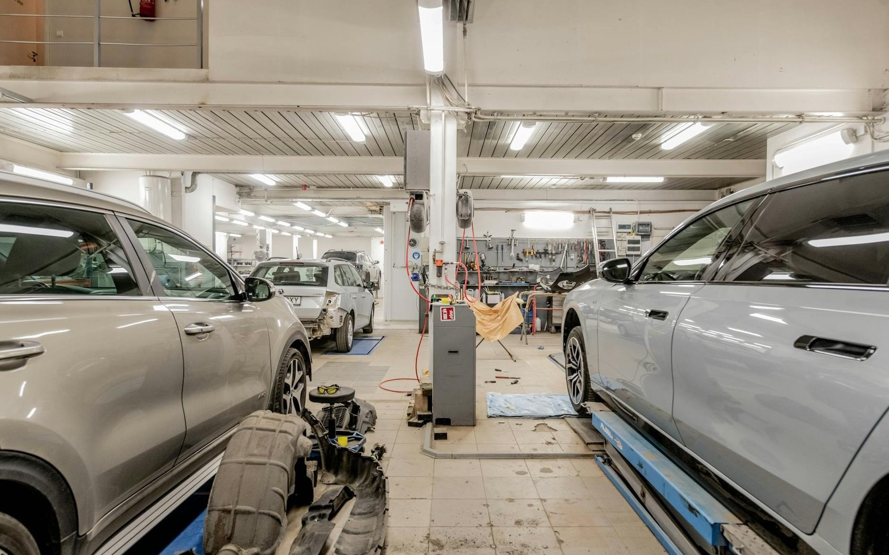
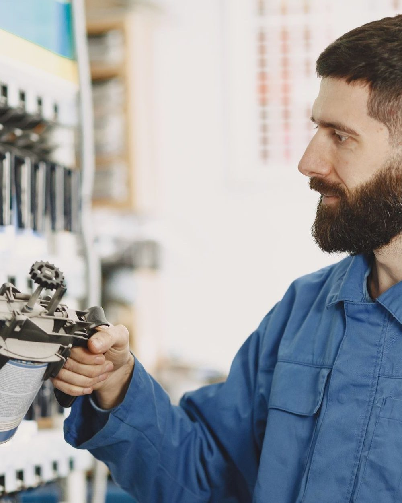
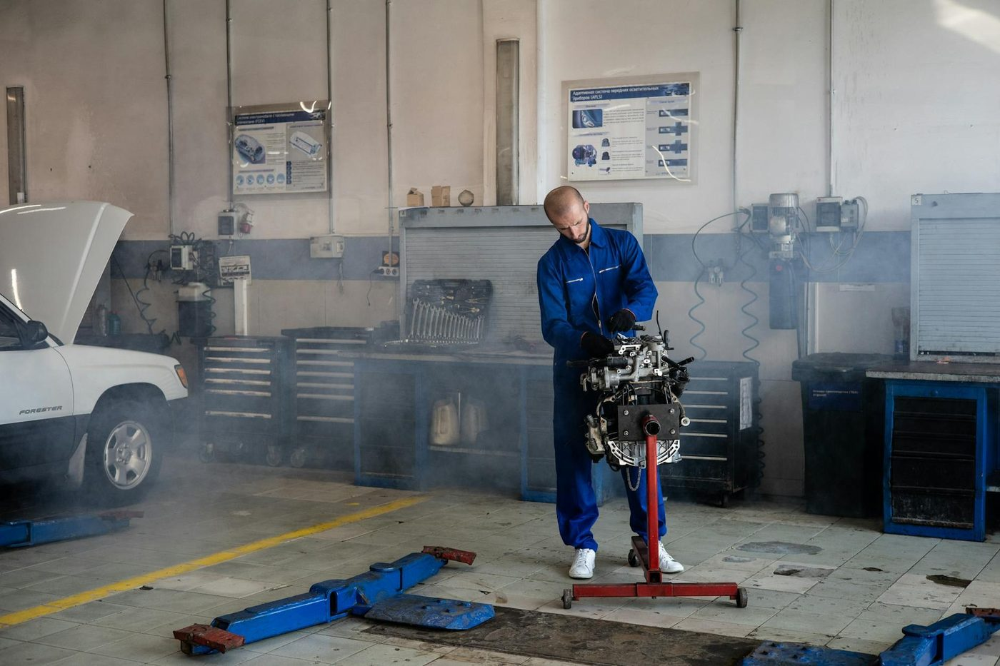
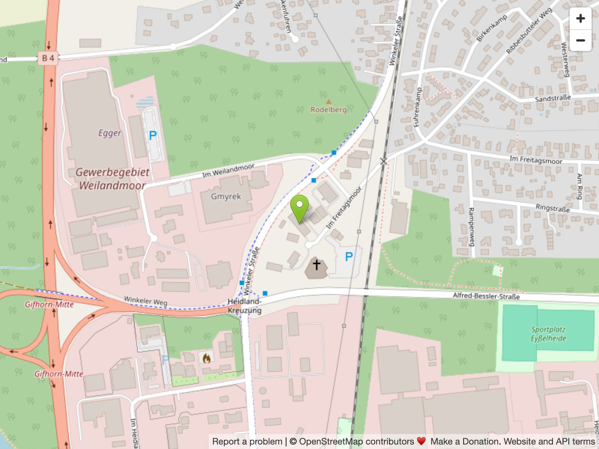

Ersatzteile & Zubehör
Für PKW, LKW, NKW, Landmaschinen und Anhänger — Markenqualität auf Lager oder schnell beschafft.
Kfz-Teile · Fahrzeugtechnik · Lack — Gifhorn
Ihr Fachbetrieb für Ersatzteile, Zubehör und Werkstattausstattung — und für Fahrzeuglack, exakt nach Farbnummer angemischt. Für PKW, LKW, Landmaschinen und Anhänger.

Sortiment
Vom Filter bis zur kompletten Werkstattausstattung — wir finden schnell und fachmännisch das passende Teil. Für PKW, LKW, NKW, Landmaschinen und Anhänger.
Für PKW, LKW, NKW, Landmaschinen und Anhänger — Markenqualität auf Lager oder schnell beschafft.
Fahrzeuglacke, Lackierzubehör und Speziallacke — inklusive Anmischen nach Farbnummer.
Handwerkzeug, Werkstattausstattung und Verbrauchsmaterial — von Elektroden bis Trennscheiben.
Achsen, Auflaufbremsen, Beleuchtung und Ersatzteile für PKW-Anhänger und den Fahrzeugbau.
Starterbatterien von Panther, Varta, Bosch und Banner sowie Öl-, Luft- und Kraftstofffilter.
Glühlampen, Xenon- und LED-Beleuchtung, Elektrik- und Elektronikbauteile.
Unser Spezialgebiet
Sie nennen uns die Farbnummer des Fahrzeugherstellers, wir mischen den passenden Fahrzeuglack exakt an — und füllen ihn auf Wunsch direkt in die Spraydose ab. Dazu führen wir das passende Lackierzubehör und Speziallacke.
Farbnummer auf dem Typenschild gefunden? Bringen Sie sie mit oder rufen Sie an — wir mischen und füllen ab.


Wir über uns
Werkstatt & Fahrzeugtechnik Stadlich ist als Nachfolger von Schmudlach Autozubehör seit Jahren die feste Adresse in Gifhorn rund um Kfz-Teile, Zubehör und Lack. Wir gehen auf Ihre Wünsche ein und finden schnell und fachmännisch das passende Teil.
Im „Dickicht" von Teilenummern, Ratschlägen und Angeboten beraten wir Sie zielsicher — persönlich, ehrlich und mit der Erfahrung aus tausenden Fahrzeugen.
Öffnungszeiten

OpenStreetMapKontakt